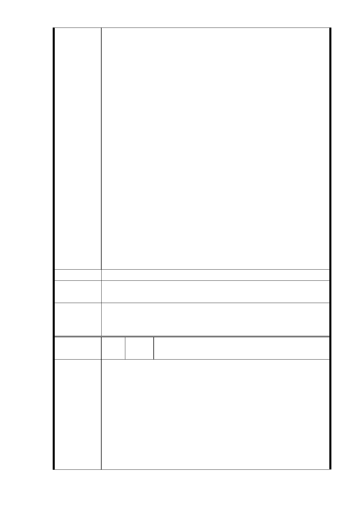

利。
故「台北市都市計劃委員會」應要求「捷運局」就本
案應以「房屋價值」作為換算基準，始符公允。
12.基本權益訴求主張：
為確保本地號七層樓住戶居住生存權，並重新主張以
下基本權益：
(1) 1 坪換 1.2 坪面積
(2）地下室停車位一個
並籲請「北市府」、「捷運局」及「北市都委會」鑒
於本案之特殊性，以「專案」爭取容積獎勵之提高，
確保住戶居民權益，遂使本案之順利進行。
如若不然，亦請貴委會除要求「北市府」、「捷運局」
及「北市都委會」就最小範圍之情況下採「簡易出入
口」設計，切勿影響住戶居民之日後權益。
素仰鈞座學養兼備，對於推動都市更新、改善市容、提
升市民居住品質不遺餘力；同時亦兼顧公權力不允濫用、市
民居住正義不被侵害、更不容官官相護，唯公至正，深獲市
民讚許、信賴。
此外，更對於陳情人等攸關身家性命財產安全遭受侵害
之事，均能體恤重視，故懇請 鈞座之鼎力相助，確保住戶居
民權益，俾避免造成不可挽回之重大損害。
建議辦法
市府回應
意見
同編號 7、9、9-1 研析意見。
一、R04 站南側捷二用地，維持公展範圍（基地面積 3,328
委員會決議
㎡），並辦理土地開發。
二、同「市府回應意見」。
編
號 9-7
陳情
人
把明貽（R04 捷二）
主旨：
強烈反對：
台北市政府捷運工程局於 102 年 11 月 13 日假本市松山商職
召開「捷運信義線東延段 R04 車站南側基地開發事宜座談
陳情理由
會」，會中主要說明宣告事項：
1．對於捷運線之規劃，「捷運局」坦承：有「自償率」的壓
力。
2．對於原有七層電梯大樓住戶，「捷運局」另依「地主：投
資人」分配比例「58 : 42」複行計算結果，戶所分得之
房屋面積約為「1 坪換 0. 7 坪」。（較之前「1 坪換 0. 6
- 47 -